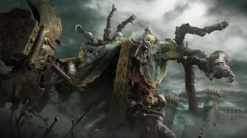

Personajes
Melina
Melina nació al pie del Árbol Áureo, pero en algún punto su cuerpo fue quemado, acabando como un espíritu errante sin recuerdos de su propósito. Este propósito se lo había dado su madre dentro del Árbol Áureo. Aunque nunca se menciona, se puede inferir que su madre era la Reina Márika la Eterna.
Godfrey
Godfrey fue el primer Señor del Círculo y el primer esposo de la Reina Márika la Eterna. Era un héroe mortal poseedor de una fuerza legendaria que lo convirtió en el primero de los semidioses, pero después de lograr su mayor victoria, la Gracia lo abandonó. Luego fue exiliado de las Tierras Intermedias y se convirtió en el primer Sinluz.
Radahn
Radahn, Azote de las Estrellas fue un semidiós y el heredero de una Gran Runa. Era un guerrero feroz que luchó contra sus hermanos por el control de las Tierras Intermedias.
Ranni
Ranni, la Bruja es una misteriosa mujer fantasmal que habita en el cuerpo de una muñeca con cuatro brazos. Al principio se presenta como Renna, pero cuando el Sinluz la vuelve a encontrar en Tres Hermanas, su verdadero nombre es revelado.
Godrick
Godrick, el Injertado fue un semidiós que residía en el Castillo de Velo Tormentoso en Necrolimbo. Según Kenneth Haight, Godrick era el último miembro vivo del "Linaje Dorado", los semidioses descendientes de Godfrey, primer Señor del Círculo y la Reina Márika la Eterna, que también incluía a Godwyn el Dorado y Godefroy, el Injertado.
Rennala

Rennala fue una Reina Lunar, cabeza de la familia real cariana, y la gobernante de la Academia de Raya Lucaria. Aunque la propia Rennala no era una semidiosa, poseía una de las Grandes Runas, que le fue regalada por su amado Radagon en forma de huevo ámbar.
Rykard

Rykard, señor de la Blasfemia fue un semidiós y el heredero de una Gran Runa. Era el señor de la Mansión del Volcán en el Monte Gelmir y el líder de una banda de inquisidores, más tarde vilipendiado por su blasfemia y comportamiento serpentino.[1] Luchó contra sus hermanos por el control de las Tierras Intermedias durante la Devastación, y se dejó devorar por la serpiente blasfema.
Morgott
Morgott, rey de los Augurios, también conocido como Morgott el Agraciado y el Monarca Velado, fue un semidiós y un Augurio que gobernaba Leyndell, capital del Reino. Poseía una de las Grandes Runas y luchó contra sus hermanos por el control de las Tierras Intermedias durante y después de la Devastación.